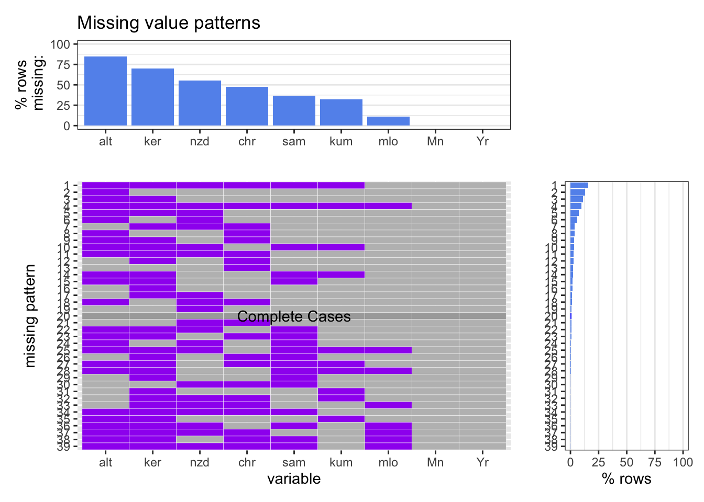
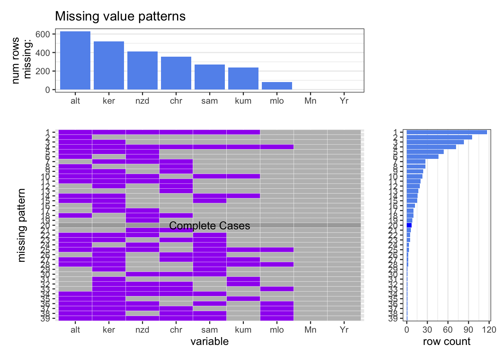

Chapter 4 Missing values
We use a single file “monthly_flask_co2” as an example to analyze the missing data in our project. This file contains monthly co2 data collected from several different inspection stations, whose locations are shown in the figure below.

Inspection stations
Read data from “monthly_flask_co2”.
## Yr Mn alt mlo kum chr sam ker nzd
## 1 1960 1 NaN NaN NaN NaN NaN NaN NaN
## 2 1960 2 NaN NaN NaN NaN NaN NaN NaN
## 3 1960 3 NaN 317.69 NaN NaN NaN NaN NaN
## 4 1960 4 NaN 319.06 NaN NaN NaN NaN NaN
## 5 1960 5 NaN NaN NaN NaN NaN NaN NaN
## 6 1960 6 NaN NaN NaN NaN NaN NaN NaN
## 7 1960 7 NaN NaN NaN NaN NaN NaN NaN
## 8 1960 8 NaN 315.74 NaN NaN NaN NaN NaN
## 9 1960 9 NaN NaN NaN NaN NaN NaN NaN
## 10 1960 10 NaN 312.84 NaN NaN NaN NaN NaNVariable description:
Yr: year
Mn: month
alt: Alert Station
mlo: Mauna Loa Observatory
kum: Cape Kumukahi Station
chr: Christmas Island Station
sam: American Samoa Station
ker: Kermadec Island Station
nzd: New Zealand Station
Firstly, we analysis its missing patterns.

As shown in the above graph, each inspection station has NA values in its column, while year and month columns don’t have missing data. The Alert station has the highest missing percentage and missing count while the Mauna Loa Observatory has the lowest missing percentage and missing count. What’s more, the type of missing data is Missing at Random(MAR). We can prove it by using the data of Kermadec Island Station and New Zealand Station.


We can observe that before 1975, both stations don’t have any data. This trend exists in almost every station. For most stations, the former data has a higher percentage of missing data. However, the missing patterns between stations are still different except for the former year. In Kermadec Island Station, the missing data around 2020 is more, while the missing data of New Zealand Station around 2020 shows little difference with other years. Thus, the missing data of our dataset is Missing At Random. Since each station starts and ends recording data at different times, that’s why we don’t have many complete cases, but we can still observe the trend of co2 generated by each station over time according to its own timeline.